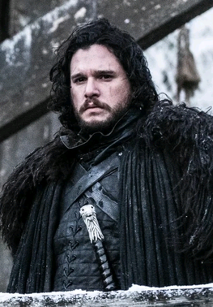

Jon Snow
Birth date: 15.08.1986
Birth place: Winterfell, Westeros
Jon Snow is a fictional character in the A Song of Ice and Fire series of fantasy novels by American author George R. R. Martin, and its television adaptation Game of Thrones, in which he is portrayed by English actor Kit Harington. He is one of the most popular characters in the series, and The New York Times cites him as one of the author's finest creations. .
Jon is described as having strong Stark features with a lean build, long face, dark brown hair and dark grey eyes. Jon has the surname "Snow" (customarily used for illegitimate noble children in the North) and is resented by Ned's wife Catelyn, who views him as a constant reminder of Ned's infidelity.
Work expirience
Oct 2018 — Dec 2020
Jul 2016 — Sep 2018
Jan 2014 — Jun 2016
Education
Sep 2008 — Jun 2013
Sep 1999 — May 2008